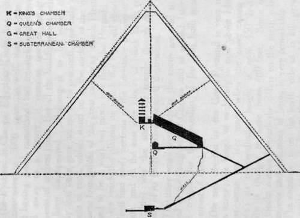

The Great Pyramid
Description
This section is from the book "The Pyramids Of Giza", by Annie Abernethie Pirie Quibell. Also available from Amazon: The Pyramids of Giza.
The Great Pyramid
The Pyramid of Cheops, Egyptian IChufu, has withstood the vicissitudes of 5000 years so well that, in spite of its interior having been ransacked for treasure and its exterior hacked away as a quarry, it remains one of the greatest monuments of ancient times. But all the buildings that belonged to it have disappeared. Nothing is to be seen of the gateway that once gave access to its precincts, and only a few fragments of rock, which stand up in the middle of the village, mark some foundations of the great causeway which Herodotus esteemed to be a work not much less than the Pyramid itself. When we reach the plateau on which the Pyramid stands, we do indeed find many portions of the limestone pavement of its enclosure, and on the east side blocks of black basalt remind us that this was the site of the temple, though only these fragments of its flooring have escaped destruction.
The three small pyramids to the south are said to have belonged to the daughters of Cheops and at a much later date a little temple for the worship of Isis was built near the southernmost of these.
The area covered by the Great Pyramid is very nearly thirteen acres ; the length of each side is now about 746 feet but was some ten feet more when the outer casing was complete : its perpendicular height is now 450 feet but originally is thought to have been 480 feet. Some of the casing blocks remain beneath the debris on the north side and their fineness and exactness of fitting is very remarkable.
The entrance is on the north side as in all pyramids and is easily approached over the mass of rubbish which lies against its walls.
The door was formerly invisible; whether it was closed by a moveable stone or simply built over is not quite certain, but it was supposed to be indistinguishable from the surface of the Pyramid.
The internal plan of all the pyramids shews evidence of an alteration of the scheme after the work was in progress. A glance at the plan of the Great Pyramid will make this clear.
In the second and third pyramids the burial chamber is hollowed out of the rock, but in the Great Pyramid, a subterranean chamber which was begun was never finished ; it was decided to build the burial chamber in the central masonry.
Section Of Great Pyramid.
On entering, the passage slopes down steeply, and, as shown on the plan, would lead on eventually to the subterranean chamber hewn in the rock, which was apparently intended to be the burial chamber when the Pyramid was first designed. The passage is now, however, blocked by a grating, and the chamber, which was never finished, is not accessible.
About twenty yards from the entrance, at the angle where the later passage begins to ascend, we find one of the huge granite portcullises blocking it, which so effectually barred further progress that the ancient treasure seekers had to force a way round it rather than attempt to break it up ; and here we follow them, in a somewhat awkward scramble, to the upper level. This is the only part which presents any difficulty, but there are good holds for the hands and feet, which the guides will show.
Above this we clamber up a passage, slippery, but narrow enough for us to hold on to the sides till we come to the extension of the corridor know as Great Hall, which is 155 feet long and twenty-eight feet high.
The walls are built up of seven courses of fine Moqattam lime-stone, each projecting slightly beyond the one below and thus narrowing to the roof, which is made of slabs laid horizontally. On either side of the passage is a ramp, up which the sarcophagus must have been dragged ; we see at regular intervals deep cuttings in the stone where wooden pegs were inserted to prevent it slipping back. A horizontal passage Tuns from the lower end of the Great Hall to the so-called Queens Chamber, which was probably intended for the burial vault under the second scheme of the builders. It is a room eighteen feet ten inches long by seventeen feet wide, with a pointed roof, and is particularly well built. But first the subterranean chamber was abandoned, and afterwards the Queen's Chamber, in favour of the much more magnificent Great Hall leading to the Kings Chamber.
Continuing the ascent we reach a short passage on the level, which expands into a small antechamber, once closed by four granite falling doors or portcullises, of a grooved pattern familiar in archaic tombs and coffins. From this we enter the Kings Chamber, the walls and roof of which are of massive blocks of granite. Its length is thirty-four and a half feet, its height nineteen, and its width seventeen feet. Its floor is 139 feet above the plateau on which the Pyramid stands. The sarcophagus is also of granite ; empty, broken, and bereft of its lid. It, like all the rest of the chamber, is perfectly plain with no line of inscription anywhere. In this room are two small air-shafts, which are actually apertures running through the whole bulk of the pyramid and admitting a current of air from the outside. The atmosphere is certainly very fresh, which must have been a great benefit to the workmen employed on this room, yet it is very doubtful whether the air shafts were contrived on their account. It seems more likely that Cheops desired ventilation for himself !
Above the King's Chamber are five constructional vaults, made lest the great weight of stone should break through the roof of the King's Chamber. Modern calculations seem to show that this caution was unnecessary. The name of Khufu has repeatedly been noted on mason's marks in these upper chambers.
On returning to the light of day after having penetrated these dark mansions of the dead, we cannot but feel that we realize much more clearly than we did the stupendous nature of the Pyramid building.
The ascent will still further impress it on us, but it also is fatiguing and much time and a good deal of assistance is needed for it. The view from the top is very fine and very different from what any other country can show, with the long stretch of rich, green land on the one side, the limitless desert on the other, and the great cemetery below.
Herodotus says that the outside of this Pyramid was covered with writing, and this has sometimes been taken to mean hieroglyphic inscriptions contemporary with it; but this is most unlikely, none such having ever been seen on the casing blocks which remain, nor on any other pyramid.
What is very probable is that there were large numbers of graffiti, that is to say, that a great many travellers wrote their names on it. The old Egyptians had the habit of doing this on show places to a great extent, and it would seem to be a taste deeply engrained in most of mankind, for the top of the Pyramid now records that it is visited every year by numbers of tourists from every part of the world.
Continue to: